Inferencia: Intervalos de Confianza (una muestra)
Estadística Básica | 2026
Hoja de ruta
- Inferencia estadística
- Definiciones
- Intervalos de confianza:
- Generalidades
- Una media poblacional: \(\sigma\) conocido o desconocido
- Una varianza
- Una proporción
Generalidades
Inferencia estadística

Estadística inferencial: Conjunto de métodos para conocer características (parámetros) de una población en estudio a partir de información limitada de una muestra (estimador)
Parámetros y estimadores
Parámetros son características de la población. Son fijos y desconocidos (e.g. \(\mu\))
Estimadores son los estadísticos muestrales (e.g. \(\bar{X}\)) obtenidos a partir de muestreos aleatorios. Son variables aleatorias y tienen una distribución de probabilidades asociada
Con la información de una muestra se pueden calcular estimadores puntuales y, asumiendo una distribución de probabilidades del estimador, los errores de estimación
| Medida | Parámetro | Estimador |
|---|---|---|
| Media | \(\mu\) | \(\bar{X}\) |
| Varianza | \(\sigma^2\) | \(s^2\) |
| Proporción | \(\pi\) | \(p\) |
| Coef. correlación | \(\rho\) | \(r\) |
| Coef. regresión | \(\beta_1\) | \(b_1\) |
Métodos de inferencia
Estimación de parámetros
Buscan responder ¿cuál es el valor del parámetro poblacional \(\theta\)?
Puntual: estimación del valor de un parámetro desconocido de la población \[\theta = \hat{\theta}\]
Por intervalos de confianza (IC): estimación puntual más el error de estimación \[\theta = \hat{\theta} \pm \varepsilon\]
Prueba de Hipótesis
Buscan responder si el parámetro poblacional \(\theta\) cumple con una determinada condición
\[H_0: \theta = \theta_0 \quad \text{vs} \quad H_1: \theta \neq \theta_0\] \[H_0: \theta = \theta_0 \quad \text{vs} \quad H_1: \theta > \theta_0\] \[H_0: \theta = \theta_0 \quad \text{vs} \quad H_1: \theta < \theta_0\]
Propiedades de un buen estimador
Cada parámetro poblacional puede estimarse de varias maneras. La bondad de un estimador se evalúa según algunas propiedades deseables.
Insesgabilidad
El estimador \(\hat{\theta}\) es insesgado si su valor esperado coincide con el valor del parámetro que se desea estimar \(\theta\)
\[E(\hat{\theta}) = \theta\]
Ejemplo: dos estimadores de \(\mu\)
- \(\bar{X}_1\) toma todos los valores de \(X\) pero les resta una cantidad \(c\)
- \(\bar{X}_2\) toma todos los valores tal cual
\(E(\bar{X}_1) = \mu - c \qquad E(\bar{X}_2) = \mu\)
\(\bar{X}_1\) tiene un sesgo de \(c\) unidades
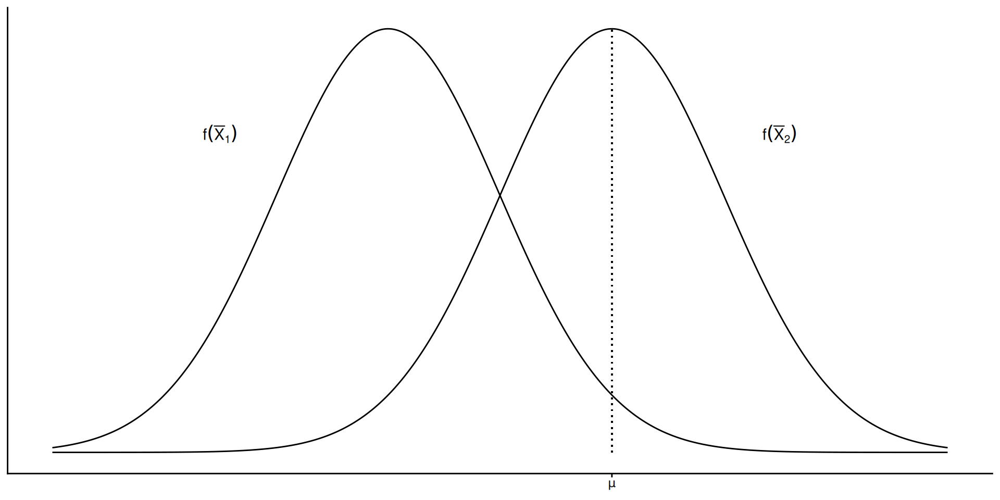
Eficiencia
El estimador \(\hat{\theta}\) es eficiente si su distribución muestral tiene varianza mínima.
\[\sigma^2_{\hat{\theta}} = \text{mín}\]
Ejemplo: dos estimadores de \(\mu\)
- \(\bar{X}\) la media aritmética con varianza \(\sigma^2_\bar{X}\)
- \(\tilde{X}\) la mediana con varianza \(\sigma^2_\tilde{X}\)
Luego, \(\sigma^2_\bar{X} < \sigma^2_\tilde{X}\), entonces \(\bar{X}\) es más eficiente
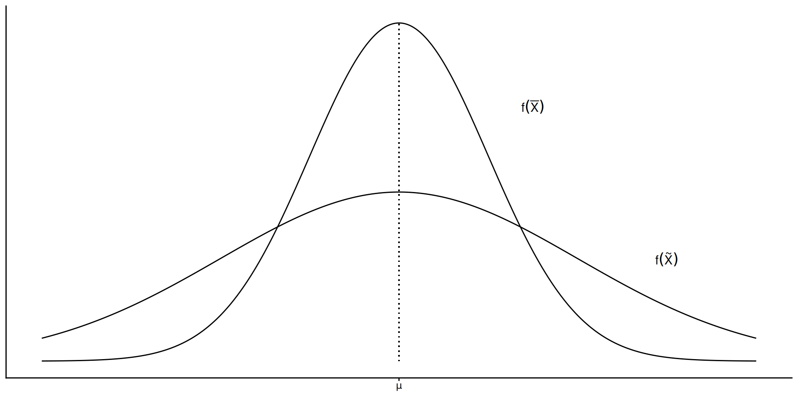
Consistencia y Suficiencia
Consistencia
El estimador \(\hat{\theta}\) es consistente si al aumentar el tamaño de la muestra su valor tiende al valor del parámetro a estimar (\(\theta\))
\[n \to \infty \Longrightarrow \hat{\theta} \to \theta\]
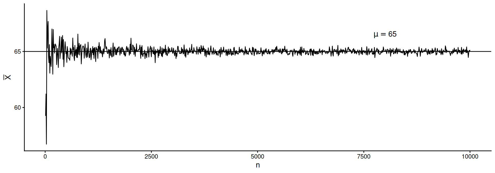
Suficiencia
El estimador \(\hat{\theta}\) es suficiente si utiliza toda la información disponible en la muestra para estimar \(\theta\)
Ejemplo: una muestra de 10 datos
[1] 17.2 18.8 27.8 20.4 20.6 28.6 22.3 13.7 16.6 17.8\(\bar{X} = \dfrac{1}{n} \sum x_i = 20.38\)
\(\bar{X}_{\text{rango}} = \dfrac{\max(x) - \min(x)}{2} = 21.15\)
\(\bar{X}\) usa toda la información, \(\bar{X}_{\text{rango}}\) sólo el mínimo y máximo: es menos suficiente
Intervalos de Confianza
Generalidades
Conjunto de valores entre los cuales puede encontrarse el verdadero valor del parámetro poblacional \(\theta\).
Más informativo: estimador puntual + incertidumbre debida al error de estimación (muestreo)
\[P(\hat{\theta} - k\sigma_{\hat{\theta}} \leq \theta \leq \hat{\theta} + k\sigma_{\hat{\theta}}) = 1 - \alpha\]
\(\theta\) y \(\hat\theta\) son el parámetro y su estimador; \(k\) es un cuantil de la distribución de muestreo de \(\hat\theta\); \(\sigma_{\hat\theta}\) es el error del estimador
Antes de tomar la muestra
- Los límites son funciones del estimador puntual (VA) y su distribución de muestreo
- \(1-\alpha\) es una probabilidad
Luego de tomar la muestra
- Los límites son fijos, \(P(\theta \in \text{IC}) = \{0, 1\}\): lo contiene o no
- Nivel/coeficiente de confianza \((1-\alpha)\) es la proporción de veces, en muestreos repetidos, en que el IC obtenido contiene al parámetro poblacional
¿Qué significa la confianza?
Ejemplo Si la media de la población de pesos de vacas de una región lechera es \(\mu = 550\) kg, y tomáramos al azar 200 muestras de tamaño \(n = 60\), estimando el IC para \(\bar{X}\) con \((1-\alpha) = 0.95\)…
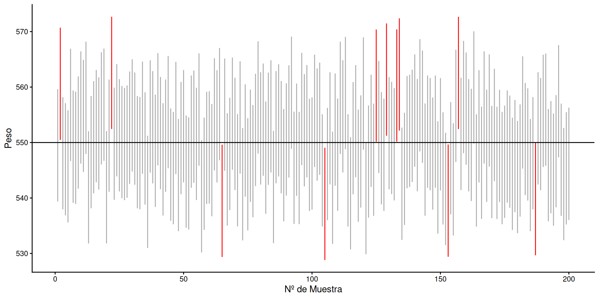
Efecto de \(\alpha\), \(\sigma\) y \(n\)
La amplitud del IC indica la calidad o confiabilidad de la inferencia. Depende de:
- nivel de confianza (\(1-\alpha\))
- variabilidad de la población original (\(\sigma\))
- tamaño de la muestra (\(n\))
Efecto del nivel de confianza
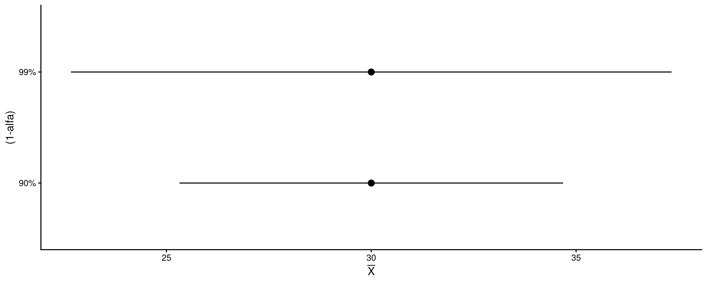
Para \(n\) y \(\sigma\) fijos, la amplitud aumenta con el nivel de confianza
Efecto de la variabilidad
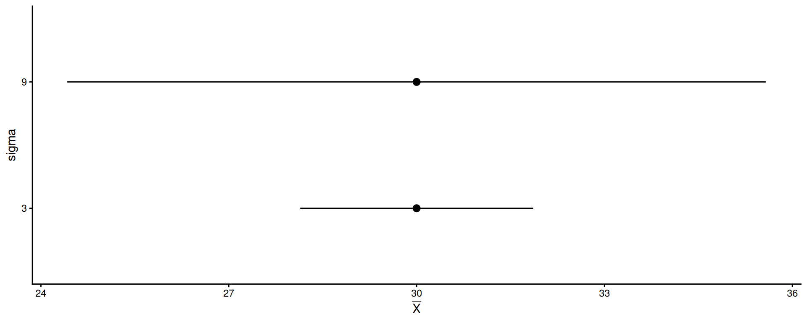
Para \((1-\alpha)\) y \(n\) fijos, la amplitud aumenta con la variabilidad de la población de origen
Efecto del tamaño de muestra
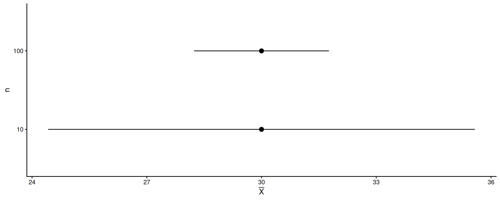
Para \((1-\alpha)\) y \(\sigma\) fijos, la amplitud aumenta para muestras más chicas
IC para un parámetro poblacional
Media poblacional (\(\mu\))
- con \(\sigma^2\) conocido
- con \(\sigma^2\) desconocido
Varianza poblacional (\(\sigma^2\))
Proporción poblacional (\(\pi\))
IC de una media (\(\mu\)) con \(\sigma^2\) conocido
Por el TLC, \(\bar{X} \sim N(\mu, \sigma/\sqrt{n})\), estandarizando se obtiene el estadístico \(Z\)
\[Z = \dfrac{\bar{X} - \mu}{\sigma/\sqrt{n}} \sim N(0,1)\]
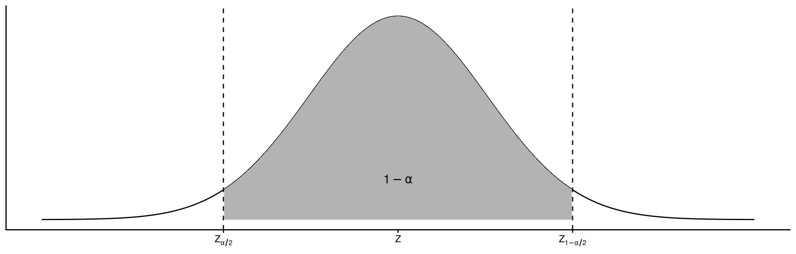
\[P(Z_{\alpha/2} \leq Z \leq Z_{1-\alpha/2}) = 1 - \alpha\]
Reemplazando \(Z\) y despejando \(\mu\)
\[P \left( \bar{X} + Z_{\alpha/2} \dfrac{\sigma}{\sqrt{n}} \leq \mu \leq \bar{X} + Z_{1-\alpha/2} \dfrac{\sigma}{\sqrt{n}} \right) = 1 - \alpha\]
o bien, ya que la distribución es simétrica…
\[IC_{1-\alpha} = \bar{X} \pm Z_{1-\alpha/2} \dfrac{\sigma}{\sqrt{n}}\]
Note
Aplicable cuando se conoce \(\sigma\), o cuando no se conoce pero \(n > 30\) (aproximación por TLC)
Ejemplo
Ejemplo
Se desea estimar con un 95% de confianza el rendimiento medio del cultivo de trigo en la zona. Una muestra al azar de 30 lotes dio \(\bar{X} = 30\) qq/ha. Por estudios previos, se sabe que los rendimientos siguen una Normal con \(\sigma = 10\) qq/ha.
Datos: \(n = 30\), \(\alpha = 0.05\), \(\bar{X} = 30\), \(\sigma = 10\)
Cálculo manual: sustituyendo en la fórmula
\[IC_{0.95} = 30 \pm 1.96 \times \dfrac{10}{\sqrt{30}} = 30 \pm 3.58\]
\[P(26.42 \leq \mu \leq 33.58) = 0.95\]
Interpretación: con un 95% de confianza, el intervalo de 26.42 a 33.58 qq/ha contiene al rendimiento medio de trigo de la zona.
¿Cuán grande debe ser la muestra?
Compromiso entre:
- precisión del estimador (amplitud del intervalo), y
- costo (tiempo y dinero) para tomar la muestra
El problema u objetivo del estudio indica el margen de error tolerable \(E\)
\[E = Z_{\alpha/2}\dfrac{\sigma}{\sqrt{n}}\]
Definidos \(E\), \((1-\alpha)\) y una estimación de \(\sigma^2\), el tamaño mínimo de muestra es:
\[n = \left(\dfrac{z_{\alpha/2} \sigma}{E} \right)^2\]
Ejemplo
Queremos estimar la media del peso de un lote de novillos con un error de \(\pm 50\) kg y 95% de confianza. Se sabe que \(\sigma = 75\) kg.
Valor crítico:
Cálculo manual:
\[n = \left(\dfrac{1.96 \times 75}{50}\right)^2 = 8.64 \approx 9\]
Necesitamos seleccionar al menos 9 novillos.
IC de una media (\(\mu\)) con \(\sigma\) desconocido
Para muestras pequeñas de poblaciones normales o aproximadamente normales: se reemplaza \(\sigma\) por su estimador insesgado \(s\)
\[s = \sqrt{\dfrac{\sum (X - \bar{X})^2}{n-1}}\]
Estandarizando se obtiene el estadístico \(t\), con distribución \(t\) de Student con \(n-1\) grados de libertad
\[t = \dfrac{\bar{X} - \mu}{s/\sqrt{n}} \sim t_{n-1}\]
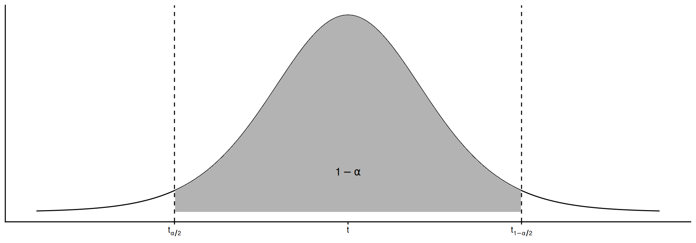
\[P(t_{\alpha/2} \leq t \leq t_{1-\alpha/2}) = 1 - \alpha\]
Despejando \(\mu\):
\[IC_{1-\alpha} = \bar{X} \pm t_{1-\alpha/2, n-1} \dfrac{s}{\sqrt{n}}\]
Distribución \(t\) de Student
Distribución de probabilidades para \(\bar{X}\) obtenida de muestras pequeñas (\(n<30\)) de poblaciones normales
Propiedades
- Infinitas distribuciones \(t\), un para cada grados de libertad \(\nu = n-1\)
- Es simétrica y centrada en 0, \(E(t) = 0\)
- \(V(t) = \nu/(\nu-2)\), más variable que \(Z\) (\(V(Z)=1\))
- A medida que \(\nu\) crece, \(t\) se aproxima a \(Z\)
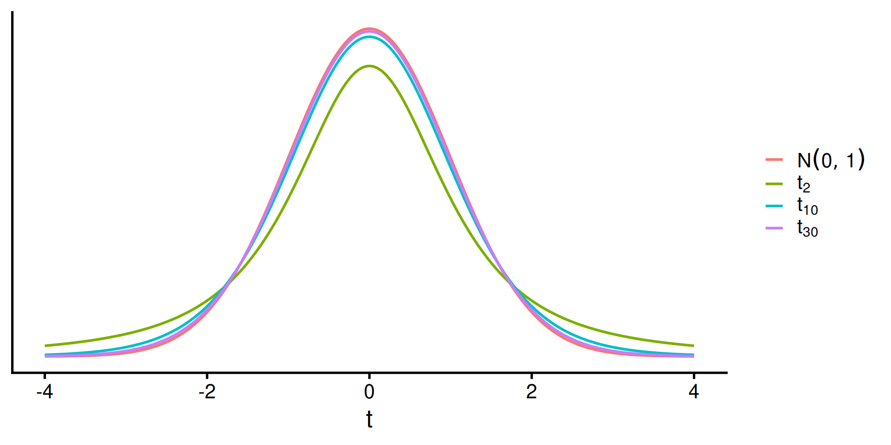
Al igual que la normal, tenemos dt(), pt(), qt() definidas por el argumento df (grados de libertad).
Ejemplo
Ejemplo
En un establecimiento avícola se toma una muestra al azar de 16 aves. El aumento de peso promedio por semana fue de 96 g, con un desvío estándar de 9.5 g. Estimar el incremento de peso promedio con un IC del 90%.
Datos: \(n = 16\), \(\alpha = 0.10\), \(\bar{X} = 96\), \(s = 9.5\)
Cálculo manual:
\[IC_{0.90} = 96 \pm 1.75 \times \dfrac{9.5}{\sqrt{16}} = 96 \pm 4.16\]
\[P(91.84 \leq \mu \leq 100.16) = 0.90\]
Interpretación: con un 90% de confianza, el intervalo de 91.84 a 100.16 g contiene al aumento de peso promedio por ave y por semana en dicho establecimiento.
IC de una varianza (\(\sigma^2\))
El estimador de \(\sigma^2\) es \(s^2\). El estadístico \(X^2\) calculado a partir de \(s^2\) tiene distribución asimétrica \(\chi^2\)
\[X^2 = \dfrac{(n-1)s^2}{\sigma^2} \sim \chi^2_{n-1}\]
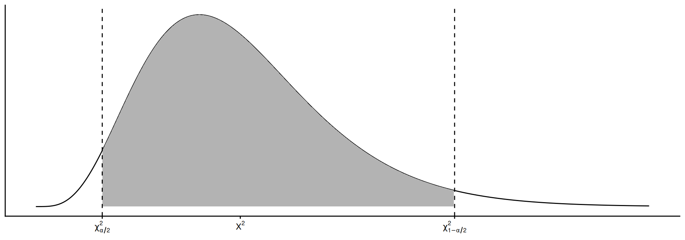
\[P(\chi^2_{\alpha/2, n-1} \leq X^2 \leq \chi^2_{1-\alpha/2, n-1}) = 1 - \alpha\]
Reemplazando:
\[P \left( \chi^2_{\alpha/2, n-1} \leq \dfrac{(n-1)s^2}{\sigma^2} \leq \chi^2_{1-\alpha/2, n-1} \right) = 1 - \alpha\]
Invirtiendo fracciones y despejando \(\sigma^2\):
\[IC_{1-\alpha} = \left[ \dfrac{(n-1)s^2}{\chi^2_{1-\alpha/2, n-1}} \;;\; \dfrac{(n-1)s^2}{\chi^2_{\alpha/2, n-1}} \right]\]
Importante
Al invertir fracciones, los cuantiles de \(\chi^2\) se invierten: el mayor cuantil queda en el límite inferior
Distribución \(\chi^2\)
Asociada a la suma de variables normales estándar elevadas al cuadrado
\[\small \chi^2 = \sum Z^2 = \sum \left(\dfrac{X - \mu}{\sigma}\right)^2\]
Propiedades
- Asimetría positiva, valores entre \(0\) e \(\infty\)
- Infinitas distribuciones, caracterizadas por \(\nu = n-1\)
- \(E(X^2) = \nu\), \(V(X^2) = 2\nu\)
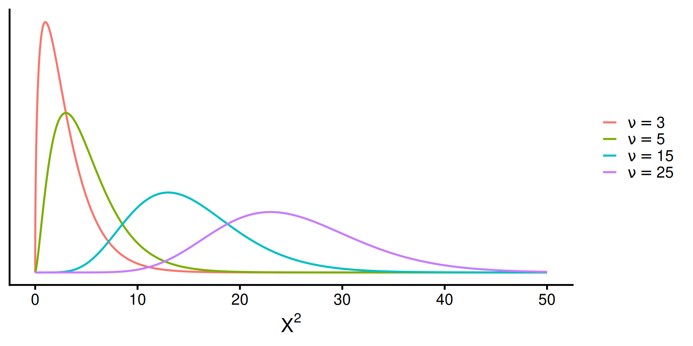
Al igual que la normal, tenemos dchisq(), pchisq(), qchisq() definidas por el argumento df (grados de libertad).
Ejemplo
Ejemplo
Un productor de fertilizantes pesa 15 bolsas y obtiene una media de 40 kg y desvío estándar de 2 kg. Con 95% de confianza, ¿entre qué valores puede encontrarse la verdadera varianza de los pesos?
Datos: \(n = 15\), \(\alpha = 0.05\), \(s = 2\)
Cálculo manual (cuantiles invertidos):
\[IC_{0.95} = \left[ \dfrac{14 \times 4}{26.12} \;;\; \dfrac{14 \times 4}{5.63} \right]\]
\[P(2.14 \leq \sigma^2 \leq 9.95) = 0.95\]
Interpretación: con un 95% de confianza, la varianza del peso por bolsa está entre 2.1 y 9.9 kg².
IC de una proporción (\(\pi\))
Si \(X \sim \mathrm{Binom}(n, \pi)\), la proporción muestral \(p = x/n\) es un estimador insesgado de \(\pi\), con varianza \(\sigma^2_p = pq/n\)
Por TLC, si \(n\) es suficientemente grande:
\[p \sim N \left(\pi, \sqrt{\dfrac{\pi(1-\pi)}{n}} \right)\]
Estandarizando:
\[Z = \dfrac{p - \pi}{\sqrt{pq/n}} \sim N(0,1)\]
Reemplazando \(Z\) y despejando \(\pi\)
\[P \left( p + Z_{\alpha/2} \sqrt{\dfrac{pq}{n}} \leq \pi \leq p + Z_{1-\alpha/2} \sqrt{\dfrac{pq}{n}} \right) = 1 - \alpha\]
o bien:
\[IC_{1-\alpha} = p \pm Z_{1-\alpha/2} \sqrt{\dfrac{pq}{n}}\]
Ejemplo
Ejemplo
Se desea estimar con un 95% de confianza la proporción de plantas de girasol infectadas con un patógeno. Se toma una muestra de 200 plantas, de las cuales 140 mostraron síntomas.
Datos: \(n = 200\), \(\alpha = 0.05\), \(x = 140\), \(p = 140/200 = 0.7\)
Cálculo manual:
\[IC_{0.95} = 0.7 \pm 1.96 \times \sqrt{\dfrac{0.7 \times 0.3}{200}} = 0.7 \pm 0.064\]
\[P(0.64 \leq \pi \leq 0.76) = 0.95\]
Interpretación: con un 95% de confianza, el intervalo de 0.64 a 0.76 contiene a la verdadera proporción de plantas infectadas.